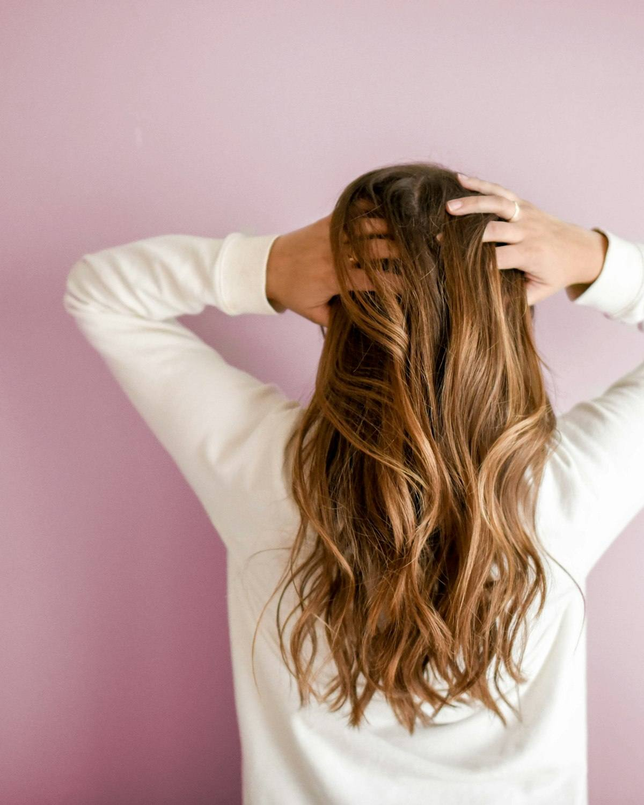

Осельки и Верхние Осельки
1 716 и 1 474
Столько человек живёт в двух посёлках. Дорога до студии считается в минутах, а не в часах, и на неё не уходит выходной.
ЗаписатьсяОсельки
Студия стоит в Нижних Осельках. Если вы живёте в Осельках, Верхних Осельках или у станции — ехать никуда не надо.
Место
За восстановлением волос обычно едут в город: час туда, час обратно, и всё равно непонятно, к кому попадёшь. Здесь ехать некуда — я работаю в Нижних Осельках, и это те же Осельки, что и у вас в адресе.
1 716 и 1 474
Столько человек живёт в двух посёлках. Дорога до студии считается в минутах, а не в часах, и на неё не уходит выходной.
Записатьсяпешком
У платформы живёт 214 человек. Приехали электричкой — дальше идёте пешком, пересаживаться и ловить машину не нужно.
Как доехать57
Столько соседей в деревне, где стоит студия. Парковка бесплатная, место есть всегда, точный адрес присылаю после записи.
Узнать адрес при записиМест, где занимаются красотой, в Осельках наберётся два-три. У ближайших соседей в Токсово рейтинг 2,1. Посёлок маленький, все друг друга знают — одна плохая работа расходится по нему быстрее любой вывески. Поэтому я не обещаю того, чего сделать не могу: здесь такое возвращается быстрее всего.
Обо мне
Главное здесь
В районе почти все пишут про кератин. Кератин — это про форму: выпрямить и убрать пушистость. Восстановление про другое: вернуть волосу плотность и упругость, чтобы он перестал тянуться, путаться и ломаться.
Когда я смотрела объявления мастеров Всеволожского района, восстановление в заголовке не заявлял никто — везде кератин и ботокс. При этом чаще всего ко мне приходят именно с этим: волосы после осветления, которые тянутся и рвутся. Поэтому у меня оно и стоит первым.
Волос — мёртвая структура, живая часть только в фолликуле под кожей. «Вылечить» его нельзя, и я так не пишу. Секущийся кончик не запаять: средства склеивают его на два-три мытья, потом он расслаивается дальше по длине — работает только состричь. Цвет восстановление тоже не меняет и осветление не отменяет.
Если по диагностике видно, что волосам не хватает только питания, — подберу средство домой и не позову на процедуру. Если вижу ранки или воспаление на коже головы, отправлю сначала к врачу. Я мастер, а не врач: диагнозы не ставлю и лечение не назначаю.
Цены
от 3 000 ₽
Восстановление без нагрева. Для волос, которые тянутся, пушатся и плохо расчёсываются.
Не делает. Не выпрямляет и не меняет форму — это не кератин.
Записатьсяот 5 000 ₽
Волосы испортили, и непонятно, что делать дальше. Разбираем, что произошло, и составляем план.
Не делает. Не обещаю результат до диагностики. Если браться нельзя — скажу об этом.
Записатьсяот 3 500 ₽
Для волос, которые осветляли: они тянутся, рвутся и не держат укладку.
Не делает. Не вернёт исходный цвет и не отменит осветление.
ЗаписатьсяЦена финальная, состав включён: сумму называю до записи, и на месте она не растёт. В карточке цена, от которой начинается, — точную скажу после диагностики, а диагностика бесплатная.
Диагностика
Прежде чем что-то делать, я смотрю четыре вещи. Из них складывается ID ваших волос, и уже под него подбирается протокол и уход.
Как быстро волос впитывает влагу и как быстро её отдаёт.
Сколько волос на площади и какой они толщины.
Чем и как часто осветляли и красили — это решает почти всё.
Жирность, чувствительность, шелушение.
Дорога
От Девяткино до станции Осельки электричка идёт 24 минуты, от платформы до студии — пешком. Автобус 619 отправляется от метро Девяткино, 675Г — от проспекта Просвещения, оба идут через Осельки. На машине из Токсово — 15 минут, из Лесколово — 9.
Подробно про дорогу